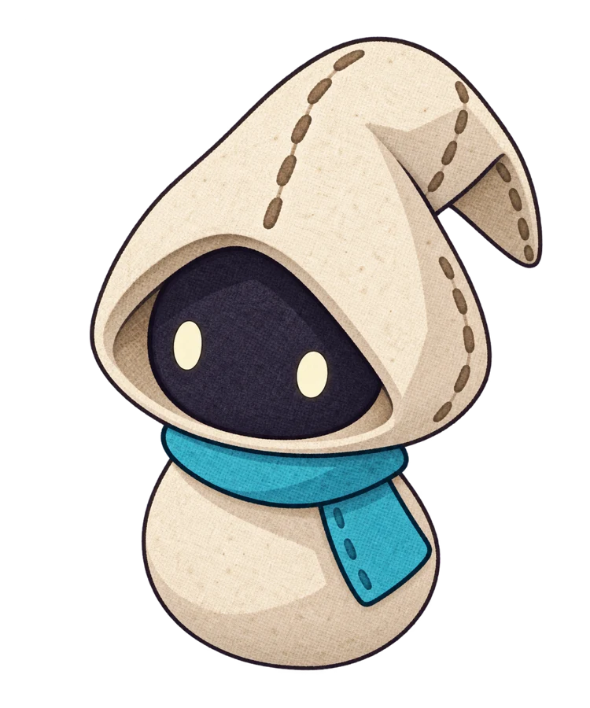

Racino
Senior Unity Developer
Leading Unity development for automated racing, from game systems and asset integration to Addressables and WebGL deployment.
THE PORTFOLIO OF LACCO ENDRES
I’m a Unity developer who brings games to life.
From the first playable idea to the little details that make it feel right.

A LITTLE CHARACTER.01 / THE COLLECTION
Different genres. Different teams.
The same love for making things work.
A few more games from my university years. Some survive as names and memories rather than screenshots.
02 / THE PERSON BEHIND THE PLAY
I’m a senior Unity developer based in Rio Grande do Sul, Brazil, with over a decade of experience building games for PC, mobile, and the web.
I like the whole process: figuring out a system, getting a prototype into someone’s hands, and refining the experience until the details come together.
My work spans automated racing, arcade shooters, simulation, and educational games. I’ve worked across different team sizes, bringing together gameplay code, art, audio, UI, and release pipelines.
Read my resumeSenior Unity Developer
Leading Unity development for automated racing, from game systems and asset integration to Addressables and WebGL deployment.
Unity Developer
Building Tubelive and Deep Space Waifu from the ground up, and contributing to early Mullet MadJack prototypes.
Unity Developer · Scholarship
A financially supported scholarship developing educational games for children, including Navegática and Corrida Gramatical, with learning experiences supporting children receiving cancer treatment.
03 / THE NEXT CHAPTER
Let’s talk games, ideas, and what we could build together.